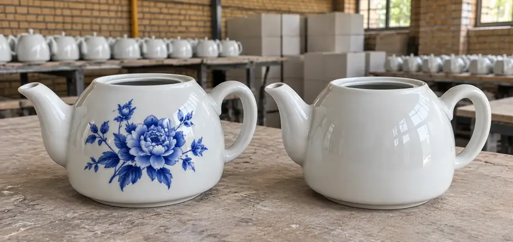

تولید مستقیم
چینی لوتوس با تمرکز بر تولید، تلاش میکند فرآیند ساخت و کیفیت محصول را با دقت بیشتری مدیریت کند.
دربارهٔ چینی لوتوس
چینی لوتوس فعالیت خود را در سال ۱۳۹۵ در شهر اصفهان آغاز کرد.
این مجموعه از ابتدا با تمرکز بر تولید محصولات چینی به روش ریختهگری فعالیت خود را توسعه داد و در طول سالهای فعالیت، با شناخت دقیقتر نیاز بازار و افزایش تجربه در تولید، مسیر رشد خود را ادامه داد.
امروز چینی لوتوس با تکیه بر یک دهه تجربه، توان تولید و شبکهٔ فروش و توزیع، محصولات خود را در اختیار مشتریان و همکاران در سراسر ایران قرار میدهد.
تمرکز ما در چینی لوتوس تنها بر تولید یک محصول نیست؛ بلکه تلاش میکنیم محصولی تولید کنیم که از نظر ظاهر، کاربرد، کیفیت و قابلیت عرضه در بازار پاسخگوی نیاز مشتری باشد.
همکاری با فروشندگان، عمدهفروشان و مجموعههای تجاری در سراسر کشور، بخش مهمی از فعالیت چینی لوتوس را تشکیل میدهد و توسعهٔ همکاریهای صادراتی نیز یکی از مسیرهای پیش روی این مجموعه است.

اطلاعات مجموعه
| سال شروع فعالیت | ۱۳۹۵ |
|---|---|
| محل شروع فعالیت | اصفهان |
| محل فعلی کارگاه | منطقهٔ صنعتی دولتآباد اصفهان |
| سابقهٔ فعالیت | یک دهه (۱۰ سال) |
| زمینهٔ فعالیت اولیه | تولید محصولات چینی به روش ریختهگری |
| زمینهٔ فعالیت فعلی | تولید محصولات چینی از جمله قوری، نمکپاش، سسخوری و … |
| دفتر فروش | اصفهان، شهرک صنعتی حبیبآباد، خیابان ۴۶ |
| آدرس کارگاه | اصفهان، جادهٔ حبیبآباد، قبل از حبیبآباد، خیابان نجمآباد، چینی لوتوس |
چرا چینی لوتوس؟
چینی لوتوس با تمرکز بر تولید، تلاش میکند فرآیند ساخت و کیفیت محصول را با دقت بیشتری مدیریت کند.
محصولات چینی لوتوس برای همکاری با فروشندگان، عمدهفروشان، مراکز پخش و مجموعههای تجاری قابل تأمین است.
چینی لوتوس امکان همکاری و تأمین سفارش برای مشتریان در سراسر ایران را فراهم کرده است.
توجه به کیفیت مواد اولیه، فرآیند تولید، پرداخت و بستهبندی، بخشی از رویکرد چینی لوتوس است.
هدف ما تنها فروش یک محصول نیست؛ بلکه ایجاد همکاریهای پایدار و قابل اعتماد با مشتریان و شرکای تجاری است.
چینی لوتوس در کنار بازار داخلی، توسعهٔ بازارهای صادراتی و همکاری با مشتریان خارجی را نیز دنبال میکند.
مسیر ما
شروع کار با تمرکز بر تولید محصولات چینی به روش ریختهگری.
توسعهٔ تولید، افزایش تجربه و شناخت دقیقتر نیاز بازار و فروشندگان.
فعالیت در منطقهٔ صنعتی دولتآباد اصفهان با شبکهٔ فروش و توزیع در سراسر ایران.
گسترش همکاریهای صادراتی و حضور در بازارهای خارج از ایران.
فرآیند و کیفیت
یازده مرحلهٔ تولید، چهار ایستگاه کنترل کیفیت و بستهبندی متناسب با روش ارسال؛ اینها چیزی است که پشت هر قوری چینی لوتوس قرار دارد.

کارشناسان واحد فروش چینی لوتوس آمادهٔ پاسخگویی دربارهٔ طرحها، شرایط تأمین عمده، زمان آمادهسازی و ارسال به سراسر ایران هستند.